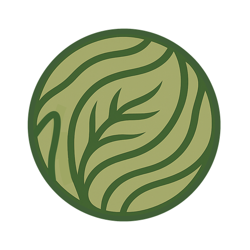

/
Solución · Transformación con IA
Diseñamos tu estrategia de IA y la ejecutamos de principio a fin: construimos el software, automatizamos los procesos y ponemos agentes a trabajar en tu operación. Estrategia y ejecución en el mismo equipo.

Darwin Geo AI En vivo¿Dónde se está degradando el suelo en la cuenca del Segura?

Serie Sentinel-2 (2018 a 2025) cruzada con la imagen de 1956. Mapa de degradación a escala de campo y zonas prioritarias de la cuenca.
Con la confianza de equipos de ciencia y gobierno


Por qué Darwin
01
Auditamos tu operación y priorizamos los casos de uso con más retorno, con una hoja de ruta clara para adoptarlos.
02
Software de IA en producción, no diapositivas. Nuestro equipo de ingeniería entrega, con modelos propios y no cajas negras.
03
Ponemos agentes a hacer el trabajo repetitivo, del documento al seguimiento, con un cerco de seguridad claro.

Somos Google Cloud Partner: desplegamos con seguridad y a escala, listos para producción desde el primer día.
Nuestra familia de agentes
Algunos operan dentro de Darwin, otros los construimos a medida para clientes. Elige uno para ver qué hace.
Un asistente conversacional sobre un visor: cruza capas por territorio, interpreta el paisaje y responde preguntas sin necesidad de GIS. Vive en Darwin Maps y explica cada respuesta con el mapa, el número y la fuente detrás.
Toma un encargo o un briefing y produce un documento a medida: elige los ejemplos relevantes, los ajusta al caso y arma el entregable. Nunca inventa: si algo no encaja, se detiene y avisa para que decida una persona.
Descubre oportunidades, las puntúa contra un catálogo y mantiene un registro vivo en sincronía con el correo. Una única fuente de verdad, siempre al día, sin dejar que nada se enfríe por olvido.
Rastrea fuentes en volumen, puntúa cada elemento por relevancia y encamina solo lo que importa al siguiente paso. Ideal para vigilar cambios en el territorio o filtrar señal del ruido.
Un agente en acción
Un ejemplo real, basado en nuestro trabajo de degradación del suelo en la cuenca del Segura: el agente entiende la tarea, reúne los datos, ejecuta el modelo y entrega el resultado, paso a paso.
Evalúa la degradación del suelo en la cuenca del Segura.
Mapa de degradación a escala de campo e informe con las zonas prioritarias de la cuenca.
Demostración ilustrativa del flujo de un agente, con datos reales del proyecto SoilSaveR.
Qué construimos
Pregunta al territorio en lenguaje natural sobre tus propias capas.
Del dato al documento: informes y propuestas listos para enviar.
Vigilancia continua con alertas cuando algo cambia en el terreno.
Conectamos con tu correo, tu GIS y tus bases de datos.
Cada agente tiene límites claros: hace su trabajo y se detiene ante lo que debe decidir un humano.
No solo llamamos a una API: entrenamos modelos para leer cada píxel.
El siguiente paso
Cuéntanos qué trabajo repetitivo o qué pregunta sobre el territorio te quita tiempo. En una llamada te decimos si un agente puede resolverlo.
Agenda una llamada